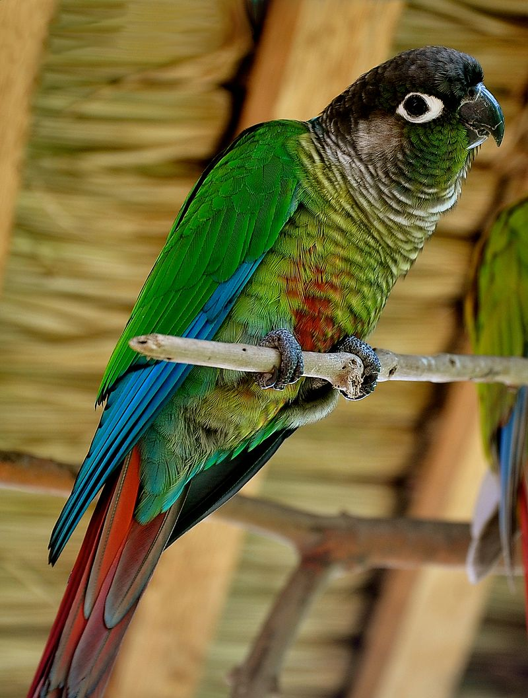
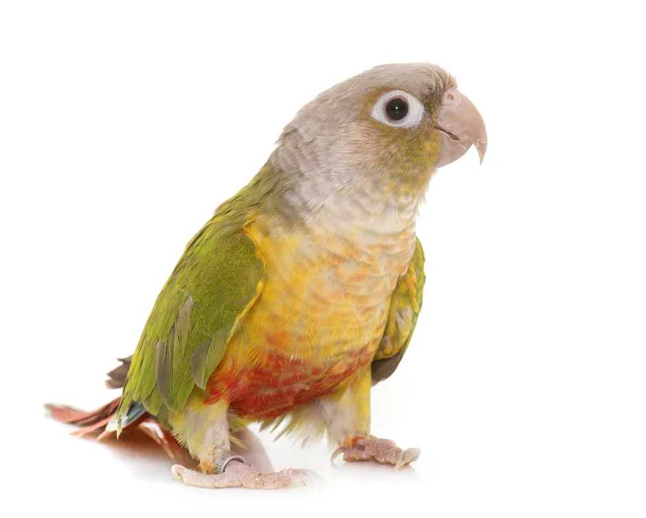
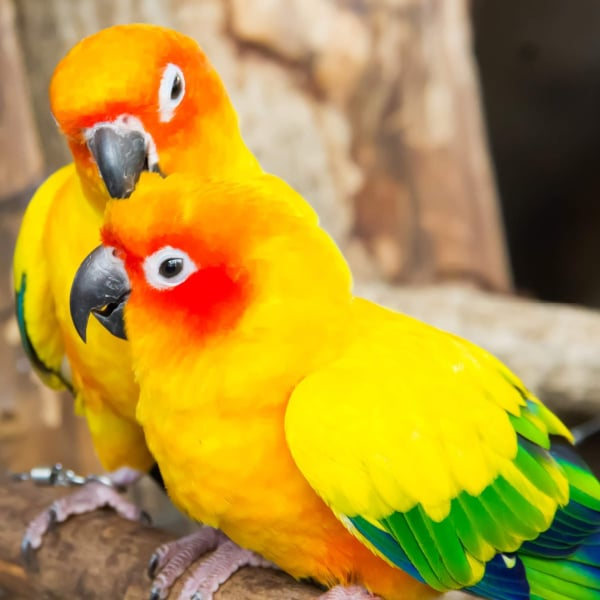

There are many different conure species around the world. One of the most well-known being the Green-Cheeked Conure.
Conures species around the world are diverse and of many different colors and defining features. Some defining features are white rings around their eyes, long tails, and a slender build.
They are also known to be a loud species of birds, their screams can be as loud as 120 decibals. That's as loud as an ambulance siren or a rock concert!
Green-Cheeked Conure
The scientific name for this type of bird is Pyrrhura Molinae (which literally translates to Green-cheeked parekeet.)
This species of conure can commonly be found in South America, particularly in Brazil, Bolivia, Argentina, and Paraguay.
They are also known for their big personality in a small body! They are very friendly and social.
Pictures of Other Conure Species
 Conure Facts
- Seed diets are not good for Conures, or any bird
- Conures can sleep with on eye open
- They can live up to 30 years
- Conures are considered endangered